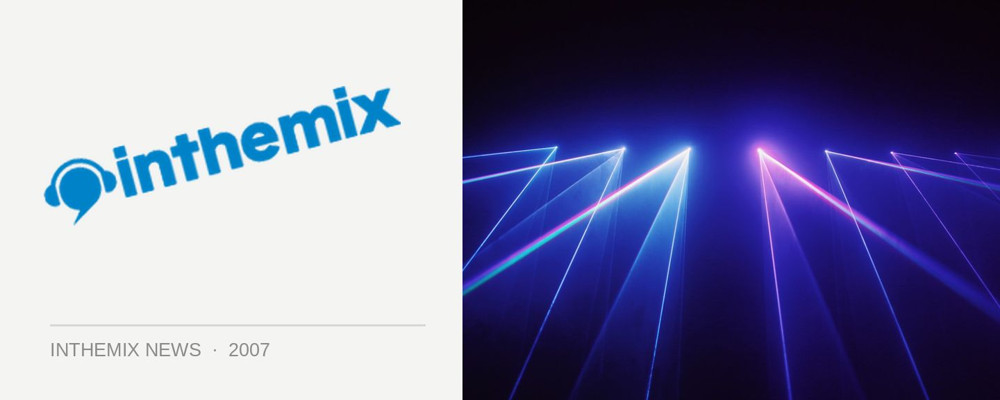

Seamless finds a new home
After a long stream of quality club nights at the Civic Hotel over an 18 month period, Seamless is moving to a bigger right smack bang in the middle of Kings Cross. The venue has just undergone a bunch of major renovations including a new DJ booth, dancefloor, lighting, sound, seating Seamless will represent the first chance that you’ll get to inspect the new area. House legend Craig Obey will be onboard for headline duties, and he’ll be joined by Torbynik, Kio, Juzz Smart, Linesy, as well as The Gauge Breakers.
Seamless has always put the focus on a different kind of party experience: one that’s low on attitude and with a focus on interesting visual displays to give you something to look at as well as listen to. They always bring a unique clubbing experience, and the organisers say to expect the same vibe when they hit their new home.
Seamless returns when it hits the Plantation Bar this Friday night, check out www.seamlessnites.com for more details.